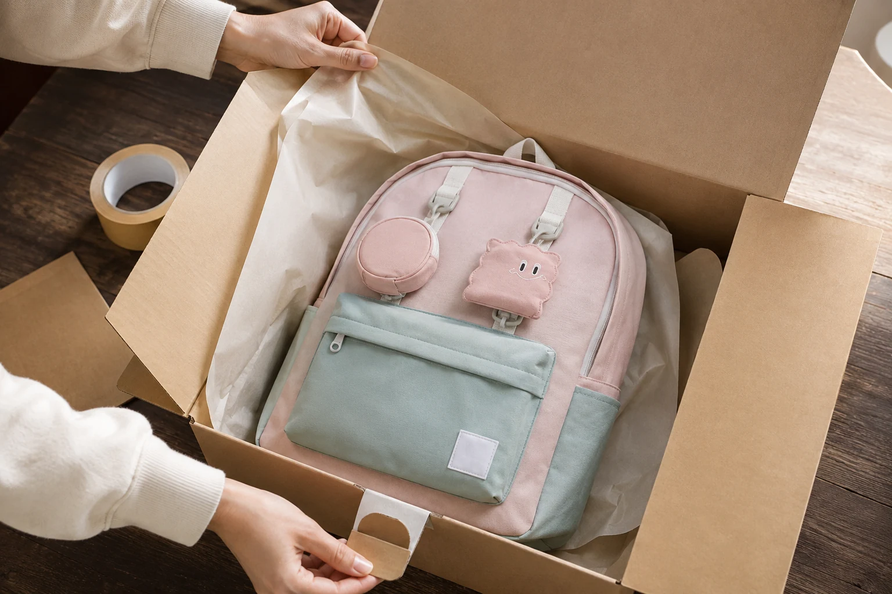
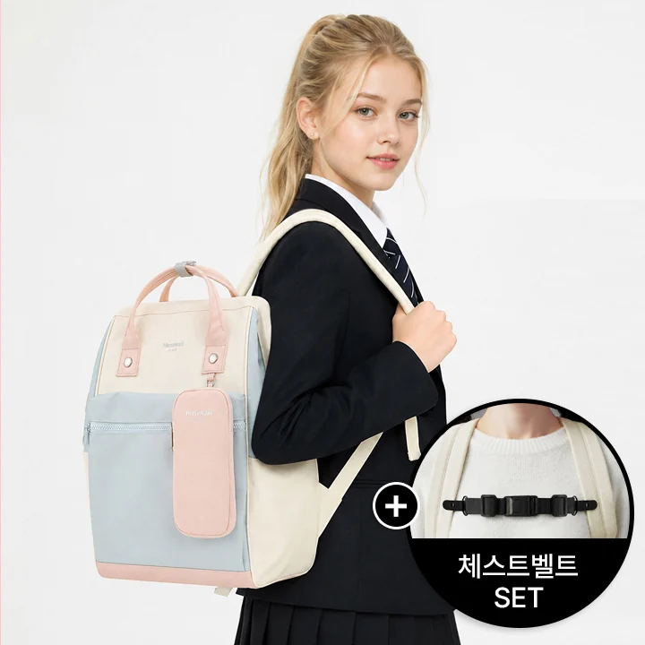

가방의 포장을 열고 첫 짐을 담는 시간

새 가방을 받으면 포장을 바로 치우고 물건을 담고 싶어질 수 있습니다. 그런데 개봉할 때는 앞으로 계속 볼 제품 정보도 함께 나옵니다. 주문한 모델과 옵션, 현재 구성과 사용 설명을 한 곳에 놓고 차례로 읽는 시간이 됩니다. 포장을 여는 순간과 첫 소지품을 담는 순간을 나누어 생각하면 상자에서 나온 작은 물건이 개인 짐과 섞이지 않습니다. 가방을 받을 때의 설렘을 오래 붙잡으려 하기보다 지금 무엇을 받았고 어떻게 쓰기 시작할지 구체적으로 정해볼 수 있습니다.
먼저 포장을 놓을 면을 정리합니다. 업무 종이와 작은 소지품이 함께 있는 책상이라면 별도 공간에 모아두고 받은 물건을 펼칠 자리를 마련합니다. 포장재가 벗겨지면서 나온 부속품이나 안내가 개인 물건 아래로 들어가지 않게 하는 준비입니다. 상자나 봉투의 상태는 받은 방식에 따라 확인하고, 개봉 안내가 있다면 그 순서를 읽습니다. 제품이 어느 위치에 있는지 모르는 상태에서 도구를 깊이 넣기보다 포장의 구조와 설명부터 살펴보면 됩니다.
주문한 물건을 확인하는 시간
제품을 꺼냈다면 주문 기록과 현재 표기를 나란히 놓습니다. 비슷한 색상명이나 크기 옵션이 있었다면 어떤 항목을 골랐는지 볼 수 있습니다. 전체 사진이 마음에 들어 주문했더라도 선택한 옵션은 따로 적혀 있을 수 있습니다. 문의할 차이가 보이면 개인 짐을 담기 전 상태를 남깁니다. 화면에서 보았던 모습과 현재 제품을 같은 모델의 자료로 대조해야 색감이나 구성이 다르게 느껴진 이유를 구체적으로 물을 수 있습니다.
가방과 별도 소품을 세트로 주문한 경우라면 두 물건을 한 곳에 펼쳐볼 수 있습니다. 추가 소품을 바로 연결하기 전에 어떤 용도로 쓰는지 설명을 읽고, 가방에서 실제로 사용할 부위를 대조합니다. 작게 포장된 물건은 큰 포장재를 치우는 동안 함께 들어갈 수 있으므로 먼저 분리해 놓습니다. 원래 가방의 구성과 따로 주문한 물건을 구분해두면 나중에 문의할 때에도 무엇을 받았고 무엇을 기대했는지 설명하기 쉽습니다. 아직 다루기 익숙하지 않은 것은 첫 짐을 담기 전에 잠시 따로 둘 수 있습니다.
가방을 놓은 자리에서 큰 여밈과 실제로 열리는 작은 주머니를 차례로 봅니다. 손으로 자연스럽게 열고 닫는 동작을 해보면 앞으로 어떤 면을 자주 잡을지 알 수 있습니다. 원단이 접혀 있거나 잘 움직이지 않는 부위가 보이면 그 위치를 남기고 판매자에게 물을 수 있습니다. 새 물건을 시험하려고 강하게 당기거나 분해할 이유는 없습니다. 사용 방법을 읽어 정상적으로 다룰 범위를 정한 뒤 첫 소지품을 담으면, 단순히 외형을 보는 시간에서 반복할 손동작을 알아보는 시간으로 이어집니다.
첫 사용을 준비할 제품 예시로 Himawari No.1027 제품 정보를 참고할 수 있습니다. 주문한 옵션과 실제 받은 구성을 대조하고 추가 물건이 있다면 사용 설명과 함께 둡니다. 파일과 필통을 담을 계획이라면 포장재를 모두 나누어 놓은 뒤 그 실제 물건을 꺼내는 순서입니다. 제품 하나를 확인하는 시간과 자신의 하루를 담는 시간을 이어보면 첫 사용에서 필요한 질문이 분명해집니다. 어떤 물건을 먼저 꺼낼지 정해둔 가방이라면 다음날에도 같은 위치를 찾을 수 있습니다.

포장재를 정리하기 전 남길 것
포장재는 현재 역할에 따라 나눌 수 있습니다. 제품을 확인하는 동안 남겨둘 것, 내용물을 꺼냈지만 작은 구성품이 있을지 한 번 더 볼 것, 확인이 끝나 처리할 것이 있습니다. 주소가 적힌 표식은 다른 포장과 따로 관리하고 소재 표시는 실제로 적힌 내용을 읽습니다. 상담이나 수령 확인에 필요한 포장은 주문한 곳의 현재 설명에 따라 남겨두면 됩니다. 공간이 좁다면 확인이 끝난 묶음부터 한쪽으로 정리해 가방과 첫 소지품을 놓을 면을 마련할 수 있습니다.
붙어 있는 표식과 분리 가능한 보호 포장은 주문한 곳의 설명을 읽은 뒤 다룹니다. 문의나 교환에 필요한 자료가 무엇인지 한 번 알아두면 확인 과정에서 임의로 없애지 않아도 됩니다. 떼어낸 표식은 상자 한쪽에 모으고, 계속 보관할 설명은 따로 나눌 수 있습니다. 표식 하나를 뺄 때마다 책상 다른 곳에 놓으면 마지막에 처리할 범위가 넓어집니다. 제품과 별도 구성, 필요한 문서가 한 곳에 남은 상태에서 사용하지 않을 포장을 치우면 첫 짐을 펼칠 면이 생깁니다.
가방 안에 종이 받침이나 보호 포장이 있는 경우에는 실제로 남은 것을 꺼내 한 곳에 모읍니다. 큰 공간만 보는 대신 열리는 작은 주머니를 차례로 열어보세요. 사용 설명과 배송 종이가 함께 있다면 이후에 읽을 목적이 다르므로 나눌 수 있습니다. 관리할 때 볼 자료는 문서 보관 자리로 옮기고 수령 확인에 쓸 정보는 주문 기록과 연결합니다. 첫 짐을 담기 전 가방 안에 어떤 것이 남아 있는지 알면 포장 종이를 개인 메모와 혼동하지 않아도 됩니다.
첫 소지품을 담아보는 순서
개인 짐은 평소 가장 큰 파일이나 기기부터 실제 외형을 대조합니다. 케이스와 파일을 포함한 상태가 입구를 자연스럽게 지나가는지 확인하고 여밈을 닫아봅니다. 충전 도구와 작은 파우치를 더한 뒤에도 필요한 묶음을 꺼낼 수 있는지 봅니다. 첫날부터 모든 빈 칸을 채우기보다 현재 사용할 것만 담아보면 가방의 구조와 자신의 동작을 연결하기 쉽습니다. 들어갈 것이라는 기대와 실제 담은 결과를 구분해 확인할 수 있습니다.
가방을 메어볼 때도 평소의 짐과 옷차림을 기준으로 합니다. 제품의 조절 안내를 읽고 끈이 비틀리거나 내용물이 한쪽에 몰린 곳이 없는지 살펴봅니다. 어느 길이가 편한지는 직접 메고 내리는 동작에서 확인할 수 있습니다. 가방을 몸 앞으로 가져와 작은 물건을 꺼내고 다시 넣는 순서도 해볼 수 있습니다. 포장에서 나온 새 물건이 이제 자신의 소지품을 관리하는 가방으로 바뀌는 단계입니다. 반복할 사용 동작을 알아두면 다음 외출에서도 필요한 위치가 남습니다.
사용 설명은 가방의 빈 칸에 계속 넣어둘 수도 있지만 실제로 다시 읽을 위치를 생각하면 다른 선택이 있습니다. 집에서 관리할 자료라면 문서 보관 자리로 옮기고 문의 경로는 주문 기록과 함께 남깁니다. 첫 사용에서 파일 입구나 끈의 상태가 궁금했다면 그 질문만 따로 적을 수 있습니다. 새로운 물건을 모두 설명해 놓으려 할 필요는 없습니다. 평소의 소지품을 넣었을 때 새로 보이는 질문을 남겨두면 실제로 사용할 조건과 제품에서 더 읽을 정보를 나누기 쉽습니다.
다음날 백팩에서 열쇠와 파일을 꺼낼 때 어느 묶음에 두었는지 알고 있다면 첫 정리가 이어진 것입니다. 새 가방이라 익숙하지 않은 위치가 있다면 그 부분만 바꿔볼 수 있습니다. 첫날에 모든 칸의 용도를 확정할 필요는 없습니다. 실제로 꺼내는 순서와 새로 생기는 자료를 보며 자리를 조정하면 됩니다. 포장에서 나온 안내는 필요한 보관 위치에 남고 가방에는 현재의 개인 짐이 담깁니다. 개봉 때 나누어 둔 물건과 첫 사용의 동작이 각각 제자리를 찾은 상태로 다음 외출을 시작할 수 있습니다.